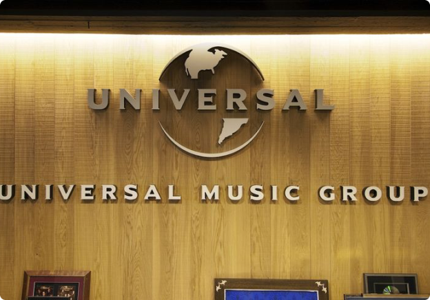
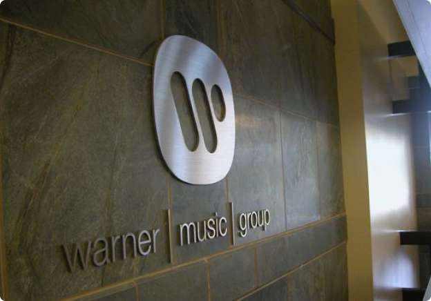

L’application que vous connaissez aujourd’hui a beaucoup de succès mais ça n’a pas toujours été le cas...
Spotify a vu le jour en 2006 grâce à Daniel Ek et Martin Lorentzon. Leur objectif: offrir une alternative légale et accessible au piratage de musique qui dominait à l’époque. En effet, les alternatives pour écouter de la musique avant l’arrivée du streaming furent limité. Soit l’achat de CD”s, le téléchargement de musiques payantes ou l’utilisation de de sites de piratage (Napster..). Daniel Ek a donc eu l’idée de créer un site de streaming contenant toutes les musiques existantes. Poussé par sa passion pour la musique, il voulait que tout le monde y ait accès à un moindre coût. Spotify aurait 2 offres, une gratuite avec des publicités et une version payante, sans publicité.
|  |
L’idée de Daniel Ek semble géniale sur le papier mais très compliqué en application.
En effet, les maisons de disques, une fois informées du modèle économique du projet, ont exprimé une réticence totale pour Spotify. Pour les maisons de disques, permettre un accès gratuit à des millions de titres meme financés par la publicité semblait être une menace pour la vente de disques et celles-ci voulaient des garanties sur le respect des droits d’auteur. Elles redoutaient également que le streaming gratuit incite les utilisateurs à éviter de payer pour un abonnement premium. De plus, l’absence de modèles de rémunération testés pour les artistes en streaming alimentait leurs inquiétudes. |
|  |
Partenariats / Royalties:Contrairement au piratage, où les artistes et les maisons de disques ne recevaient rien, Spotify offrait une rémunération transparente, proportionnelle à la popularité des titres. |
Un Modèle Gagnant-Gagnant:Nouveau flux de revenus pour les entreprises et une reprise de contrôle sur la distribution. Pour les utilisateurs, c'était une alternative pratique et légale au piratage. |
Jouer la Carte de la Patience:Les négociations avec les majors n'ont pas été rapides. Daniel Ek et son équipe ont passé plus de deux ans à convaincre les maisons de disques. Ils ont pris le temps d'adapter leur modèle en fonction des exigences des majors. |